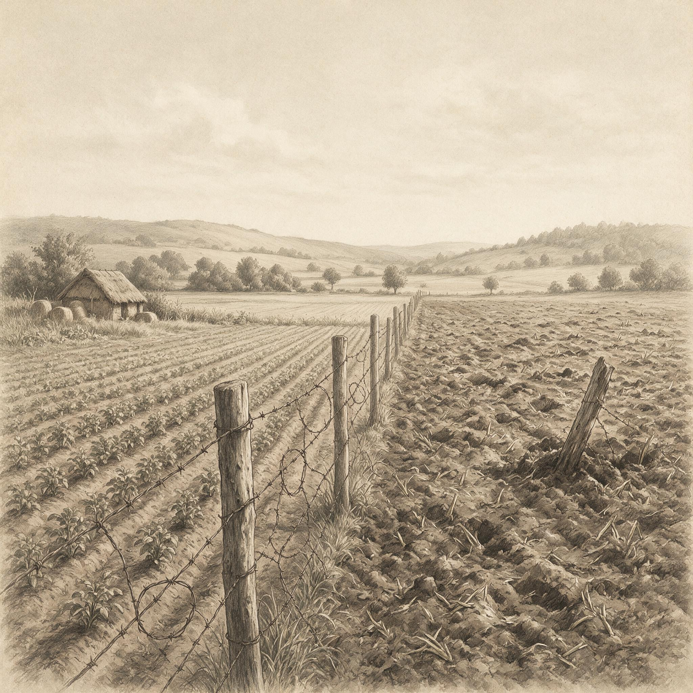

第 16 章
铁丝网两侧的邻居
在县警长办公室的档案盒最上层，夹着一张薄如蝉翼的调解表副本，日期栏印着2014年3月19日。争议事项一栏仅以“野猪破坏”四字草草带过，下方北栏的签名笔力深重，几乎刺穿纸背，南栏的签名则松散潦草，似是会终时仓促落下。“达成协议”一栏空置无物，这份文件因此缺少任何正式结论，只在副本末尾以蓝墨水补注了一行字，写明双方暂且同意维持边界现状，日后再行联繋。这张纸在盒中沉睡四年，蓝字受潮晕染，边缘泛出浅灰，宛如一道悬而未决的边界在雨中渐渐模糊。
盒子的主人叫德韦恩·哈珀，住在俄克拉何马州南部，红河以北大约四英里。他的地块往南贴着州界，与得克萨斯州接壤，中间只隔一条旧铁丝网。德韦恩从2009年接手这片两千英亩的土地，做的是猎禽生意。每年春天，他在高地上播种高粱和向日葵，低洼处留出浅水带，让南下的鸭群有落脚和进食的地方。秋末冬初，猎手按日付费进场，天未亮就钻进掩体，等待灰蒙蒙的天边出现成群的影子。这片土地属于大平原的东部边缘，根据内布拉斯加-林肯大学大平原研究中心的定义，这片总面积约130万平方公里的广袤区域，正是野猪问题最突出的地带之一。
这生意靠的是秩序，是在合适的时间里把水草、籽粒和遮蔽处同时凑齐。野猪不遵守这个秩序。它们从红河南岸过来，几乎都在夜间，拱开泥土找食，把水草带踩成烂泥，把高粱地翻得像有人用圆盘犁来回

铁丝网两侧邻居因野猪破坏对峙示意图
AI 生成插图，非史实影像。
耕过。
德韦恩留着一本螺旋笔记本，里面逐年抄录所有与野猪有关的开支。围栏材料、陷阱维修、弹药与燃料、作物损失，四栏。作物损失最难算，因为很多损害不是整片消失，而是产量打了折。高粱还在，但行间距被泥堆打乱，收割机走不顺；向日葵被拱倒，花盘贴地发霉。
最让他不舒服的不是数字，而是那一栏逐年稳定下来的幅度。头几年还有波动，到了后来，每年度总额落在一万六到两万三千美元之间，像被什么固定住了。这个数不会让他破产。他的猎场还能盈利，猎禽收入加上联邦湿地保护计划的一点补贴，足够把日子过下去。但他逐渐意识到，这笔两万美元的支出，买的不是安全，而是一道不断漏水的墙。南侧的地主叫克林特·巴顿。
他的地在得克萨斯州，不到八百英亩，大部分是松橡混交的次生林，林下密密的矮栎和藤本植物。
七年前，他开始把这片地的狩猎权租给一家野猪狩猎向导公司。合同上写的是“野生猪类”，没有出现“控制”或“清除”这样的词。公司付年租金，换来独家带客进林打猎的权利。克林特从不过问每年猎了多少头。他只知道，这笔租金比过去在林间放牧或种草划算得多。
对克林特而言，野猪不是灾害，是产出。他的林地提供了猪群最需要的隐蔽处和食物，尤其是秋季橡树落下的坚果和松林边缘的软土。德韦恩在北边杀得越勤，南边林地的猪群聚集得就越密。南侧没有诱饵，也没有围栏，只有整片不需要管理的次生林，等着猪从北边退回，或者从更远的河岸迁入。
铁丝网隔开了两笔账。北边的账本上，野猪是成本；南边的合同里，野猪是收益。野猪在两边之间穿行，哪边有食物就去哪边。它们不读地契，也不看州界。
问题在于，当地的政治和法律只读地契。每一次野猪穿过铁蒺藜，越过的不仅是两家人的地界，还是两套完全不同的土地逻辑。
德韦恩不能到南边林地里设陷阱，那是非法侵入。他也不能要求克林特为高粱地的损失负责，因为在俄克拉何马州，野猪长期被当作野生动物。野生动物的行为不在邻地所有人的控制义务之内。一个野猪种群可以在南边被养成商业资源，而它对北边造成的损失，只能由北边自己承担。
这种不对称不是一开始就清楚的。德韦恩在最初几年里，把每一次拱坏的过境点拍照存档，附上修复材料的发票，攒成厚厚一叠，寄给南边。他以为证据足够多，对方至少会分担一部分费用。克林特把邮件转给了律师。律师回了半页纸，说按州法，地主没有义务防止野生动物离开其自有地产。
德韦恩读到“野生动物”这个词，停顿了一下。他见过那些猪在围栏边拱土的样子，粗颈，宽蹄，浑身沾满泥，和家猪的区别只在于更窄的臀部和更长的鬃毛。它们有蹄，吃粮食，会繁殖。但在法律文件里，这些特征不能让它们变成家畜。词类一旦定下来，责任的门槛就完全不同了。县警长办公室介入是在2011年。
那年秋天，红河一带多雨，河床边的软土被野猪拱得厉害。德韦恩打电话说，南边来的猪把东段围栏弄开了几处。一名副警长到场拍了照，建议双方自行协商。这次没有留下正式调解记录，只有一通登记在案的报警电话。
第二年，破坏加重。德韦恩把费用清单寄给克林特，没有得到直接回复。他随后请求县里正式调解。
第一次会面在警长办公室后面的小会议室，墙上贴着猎季通告和几张发旧的寻人启事。德韦恩带了照片、发票和一份手写的年度损失汇总。克林特没有来，派了向导公司的一个代表。那人看了几分钟材料，说公司只管南边林地里的狩猎活动，不负责猪在外面干了什么。德韦恩说，猪是你们林子里养出来的。对方没接话，只说了一句，合同按州法签的。双方没有签成任何协议。
第二次会面约在来年春天，表格上的字这次更少。争议事项栏里写“野猪破坏”，有人用笔在下面加了一行字，大意是争议点在于野猪该按野生动物还是家畜处理。这行字后来成了整个盒子中最重要的一处批注。
它没有被划掉，也没有被正式采纳，只是作为一份县级调解表上的手写痕迹，安静地指示出纠纷真正卡住的位置。
这个分类问题在两州法律里确实不同。得克萨斯州从上世纪九十年代开始，逐步把逃逸家猪及其后代纳入与家畜接近的处置逻辑，地主有权在自己的地产上控制野猪，在某些情形下还涉及围栏义务。俄克拉何马州则更倾向于把野猪视为非本地野生动物，允许土地所有者在自己的地上采取措施，但没有把控制责任延伸到邻地。
两州边界恰好从争议地块中间穿过。于是，同一头猪在铁丝网南边是一种可围猎的准家畜资源，在北边则是一种法律上不可追责的野生动物。它不需要改变任何行为，只需要在夜间穿过州界，身份就变了。
德韦恩的律师在诉讼前说得很直白：这个案子输赢的关键，是法官接受哪一种分类。如果接受野生动物，妨害责任几乎不可能成立；如果接受家畜逃逸后代，围栏法会有完全不同的适用。律师的问题在法庭上没有得到一次性回答。
德韦恩在2014年正式提起民事诉讼，起诉南侧地主克林特，主张野猪的持续入侵构成私法上的妨害。起诉书只列事实：2009年以来，南侧林地中的野猪持续越过边界，破坏北侧作物和猎禽栖息地；被告长期放任，且从野猪群体中获取租赁收益；原告每年投入围栏与陷阱费用，仍无法阻止入侵。
被告律师应诉时没有否认野猪越界，也没有否认其当事人收租的事实，只抓住一点：野猪是野生动物，土地所有者无法合理预见野生动物的自然迁徙，因此不构成妨害。
原告律师则试图从红河地区野猪的来源入手，主张这一带的猪绝大多数是历史上放养猪群的后代，应该按逃逸家畜处理。双方在证据开示阶段反复交换文件，关于“野猪群体身份”的询问函来来回回。德韦恩的代理律师调出过一份州农业推广机构的说明，讲红河走廊野猪的来源和扩散。南边则提交了向导公司的狩猎记录，想说明猪群已在野外自然繁殖多代，应被视为野生动物。
这场分类之争，最后落到两份彼此矛盾的专家意见上：一份强调遗传来源，一份强调种群现状。
法官没有在庭前决定，而是在秋季安排了一次和解会议。和解的地点还是县警长办公室。屋里光线发白，桌面上有冷咖啡留下的圆印。
德韦恩带去了那本地图上用铅笔标注的过境频率记录。他用红线标出野猪从南侧林地穿过州界、进入北侧高粱地的主要通道，一条沿着旧铁路路床下的涵洞，另一条从干涸的支流沟上行，绕过第一块向日葵地，直插水草带。律师说，这些路径证明损害是持续且可预见的。南侧律师说，图上画的正是野生动物的觅食行为，不是被告的行为。
法官听完了双方，没有拍板分类问题，转而问双方是否愿意在围栏分摊上找一个数字。克林特那年愿意支付大约两个月的围栏维护费，但要求在协议里写明不承认任何责任。
德韦恩拒绝了这个条件。他认为那不是分担，是把十五年的损害折成了一笔不痛不痒的施舍。会议记录只写双方未达成协议，没有记下具体数目。
之后两年，案子进入更慢的程序，律师费开始超过每年两万美元。德韦恩有一次对他的律师说，我花了二十年养这块地，现在为了猪花掉两个大学学费。
律师没接话，只是在卷宗边上写了句“继续关注”。这样的纠纷在红河两岸并不罕见。附近的土地所有者大多在做类似的心算。有人替德韦恩抱不平，说他每年花两万块钱守住边界，其实是在帮南边的猎猪生意维持一个从林地溢出的种群。也有人觉得克林特没有越界，他在自己的地里收租，并没有把猪赶到邻居地里的义务。
两种意见吵不出结果，因为它们共享同一个前提：产权边界是神圣的，任何跨过边界的治理都缺乏法律依据。野猪的治理需要一种比单个地块更大的行动半径，但美国的土地制度没有给这种合作预留空间。县里没有权力强制南侧消减猪群，德韦恩也没有权利跨越州界去清除猪群。唯一能跨界的，是猪本身。
德韦恩在诉讼开始后，不再坚持调解。他把所有相关文件装进塑料文件盒，放在猎场办公室的钢架上。最上面那张照片，是2013年秋天拍的。照片上一片拱翻的高粱地，断茎半埋在新翻的湿土里，几根铁蒺藜歪向一边，上面挂着一束灰褐色的猪鬃。照片背面没有写字。
“合理”这个词在德韦恩手里搁了好几天。他把那份最终备忘录的复印件折在文件盒最上层，冷光灯照在纸面上，他觉得这个词比“野猪破坏”更像一个没有边际的箱子。
他给律师打过两次电话，第一次是问，如果南边在边界上挂几个破轮胎、喷点过期柴油，算不算采取了合理措施；第二次是问，如果北边自己多修一段双层围栏，法院以后会不会认为他已经默认接受了南边的无所作为。律师在电话里的声音断断续续，最后说，法院没定义，就是不想替两州回答这个问题。德韦恩没再问下去。
他把手机搁在猎场办公室的折叠桌上，桌角是一摞用透明文件袋分装的发票，每年一袋。2014年以前用的是县五金店的复写收据，蓝色油墨，边角容易褪色。2015年以后换成电脑打出的维修明细，钢板、镀锌刺绳、桩柱、焊接人工、运输费，最下面一格用斜杠分开，写着一万八千四百七十。他翻到2016年那一张，总额一万七千九百二十。2017年涨到两万零六百。
这些数字本身不说明问题，但它们在螺旋笔记本里排成一列，旁边是他用铅笔写的“南侧围栏后过境次数”。围栏支出最高的一年，过境次数确实下降了，但只在前三个月。后来他补上一行小字：“猪学会从涵洞上来。”
那处涵洞他在笔记本里贴过一张折角照片。旧铁路路床早已废弃，铁轨被拆得只留下灰白色道砟，涵洞在雨季流水，旱季露出半尺宽的泥底。野猪不从水面走，而从涵洞外侧的斜坡绕上去，把顶部土坎拱出一个豁口。德韦恩几次用碎石和旧围栏网堵住豁口，过不了几夜，石块被推到两边，网上挂着泥和几根粗硬的背毛。他曾拍下这些痕迹放进证据文件夹，标签写着“2017年3月，东界涵洞北口”。
律师在证据开示阶段没有用上这些照片，因为南边不否认猪越界，只否认猪是被告的“财产或半财产”。这个词德韦恩记了很久。南侧律师在文件里写到“半财产”时，是援引得州农业法里关于无记名牲畜和逃逸家猪的区分。德韦恩听着这些词从律师嘴里出来，觉得像在谈论另一个物种，而不是他半夜听见的那种拱土声。
律师曾把两州的法条摘要打印出来给他看。俄克拉何马州一侧，土地所有者可以猎杀、捕捉或驱赶野猪，但野猪不属于所有者的动产，损害不随所有权转移；得克萨斯州一侧，无记名猪类在被圈围或显著标记前，所有权归属比较复杂，地主对越过围栏的家猪后代负有一定程度的防范义务。
德韦恩把这份摘要和那张县级调解表并排放在桌上。调解表背面手写的那行字已经被他复印过两次，一次给律师，一次作为证据附件。复印纸上，钢笔字迹变成更深的灰蓝色，像从纸背长出来的一小片灌木。
他有一次在办公室外面问律师，如果两州法律差这么多，那这条州界到底算不算一条畜牧围栏？律师没有直接回答，只说法官很可能会避免在判决里写死分类问题，而是建议各自管好自己的地。德韦恩当时说，各自管好自己的地，这句话他听了好几年。
他回到围栏边的时间比法律程序更密。2016年夏末，他雇了两个人手沿北侧边界补设栏桩，因为雨后地面变软，旧桩有几根向东南倾斜。南侧新立的围栏还没有架到他这边，中间留着大约三十码的空当，空当里是排水沟和几丛野生木槿。德韦恩站在自己地界内，看到南边的向导公司皮卡车沿土路开过，车斗里放着几个蓝色塑料桶。他后来听附近镇上的人说，向导公司会在林子里补喂玉米，尽管他们合同里写着不设固定诱饵。
德韦恩没有去核实。他知道，即使核实了，也不能跨过铁丝网去制止。边界上的铁丝网锈得发红，有几处被野猪拱得贴着地面，他用新买的镀锌刺绳一圈一圈重新拉紧。每拉一段，他都在笔记本里记下位置和长度。那年秋天，他第一次在自家地里见到向导公司的猎手，穿着迷彩伪装，背着步枪从南边小道上走过。猎手冲他点了点头，没有停。德韦恩也没有喊住他。两家的边界在灌木丛里拐了个弯，向导公司的牌子和德韦恩的“禁止穿越”旧铁牌互相背对着，谁也不看谁。
在镇上合作社买柴油的时候，德韦恩遇见过几个同样受野猪影响的农场主。有人把自家大门用铁链锁上，因为猪拱坏了门柱；有人在草场里埋下带倒刺的钢夹，伤了一头去饮水的小牛，被自己老婆骂了一顿。他们说起德韦恩的案子，都说这官司打不长，因为猪不是人，法院不能判猪该走哪条路。一个年纪大些的人说起得州和俄克拉何马对野猪的分类，摇了摇头，说州界不是画给猪看的。
这番话德韦恩听过不止一遍，但他没有接话。他心里清楚，真正的问题不是猪不认得州界，而是认得州界的人没有工具跨过去管猪。他不能再往下想，因为再想下去就会绕到那句话：产权边界是神圣的。这句话在县里的规划听证会上、在农业局办公室里、在贷款银行的文件中都被反复说过。他不是反对产权，他反对的是，当猪不服从边界时，法律只承认猪可以越过，却不承认人可以跟过去。
这种无力感集中在2018年春天。克林特在靠近北侧边界的地方加修了约半英里围栏，德韦恩起初以为对方终于要配合。他甚至在日历上记下“去看新围栏”。三天后他沿着自己一侧往东走，发现新围栏末端没有闭合，而是顺着南侧一条浅沟拐向林内，留下一个朝北的喇叭口。
原来向导公司需要野猪从北侧河滩回到林地的通道，但又不想让猎手追猪时跑出租赁区。新围栏的目的，是把猪群引向几个预设的过境点，而不是阻止它们过境。德韦恩站在喇叭口外，看见地面上有密集的猪蹄印，深深浅浅，全通向他刚修好的高粱地。
那一刻他没有发火，只是掏出手机拍了几张。照片拍得歪斜，因为手有些抖。他后来把这些照片传给律师，律师回复说，这类情况对调解没有帮助，因为南侧可以说，围栏是自己地里的合法围栏，开口朝哪儿不关别人的事。德韦恩盯着手机屏幕上的回复，过了很久才把手机反扣在桌面上。
等待法院正式文本的那几周里，他把盒子底部的卷宗又翻了一遍。2011年秋天的第一次报警记录只是一张黄色便签，副警长用圆珠笔写了一行字：“边界东段围栏破损，疑似野猪通过。已到场拍照，建议双方协商。”
德韦恩当时问副警长，能不能写个正式报告，说这些猪是从南边来的。副警长把相机收进皮套，说警长办公室不负责认定猪的来路，只负责确认有没有刑事损害。德韦恩后来又给县农业局打过电话，接电话的人先问他有没有照片，再问他有没有监控。德韦恩说，照片有，监控没有。
对方沉默了一会儿，说农业局可以派人来看看损失，但不能对邻居的林地做什么。那次现场评估发生在2013年秋天，评估员穿了一双旧皮靴，站在被拱翻的高粱地里，把估产表在文件夹上按平。他没有对“野猪是野生动物还是家畜”表态，只说作物损失的年份和位置要记清楚，将来打官司用得上。德韦恩问他，如果邻居不赔，打官司要几年。评估员把铅笔夹进表页里，说，那要看法院先回答哪个问题。
作物保险员的上门时间更早。2010年春天，德韦恩第一次报了野猪损害。保险员开车绕到地块东侧，看见排水渠边的泥坡上全是深浅不一的蹄坑。他蹲下来，用手比了比其中几个坑的宽度，说这不像本地野猪，本地野猪没那么大。
德韦恩后来才知道，红河走廊的猪群来源很杂，有早期放养猪的后代，也有后来从狩猎围栏逃出来的混血猪。这个来路问题在诉讼后期成了专家意见分歧的焦点。南边聘请的野生生物学家提交了一份报告，说这些猪已经在野外繁殖了十几代，取食、产崽和迁徙都表现出典型野生行为，不应按家畜对待。德韦恩的专家则从耳朵形状、体色分布和一组旧照片里找到线索，认为它们与上世纪七十年代红河两岸散养的家猪高度接近。
双方律师在质证时互相追问，一方说“几代野外繁殖还不足以改变法律属性”，另一方说“法律属性终归要看人对动物是否实际控制”。德韦恩坐在旁听席上，看见法官摘下眼镜，用镜腿敲了敲桌面，说这些意见法院已经读了，下一步还是请双方就“合理措施”的措辞继续交换意见。
整盒子里唯一带着日期和出处的，是那些县级调解表、法庭通知和那本螺旋笔记本。笔记本的最后几页，是2018年以后开始记的“南侧围栏后月度过境次数”。克林特在那年春天，果然在靠近北侧边界的地方架了约半英里围栏，不是为了拦住猪，是为了让向导公司更容易把猪控制在自有林地内。
德韦恩记了几个月，发现头三个月过境次数下降了，之后慢慢回升。野猪找到了涵洞的破口，又学会了绕过新围栏末端的浅沟。他在笔记本里画了一段锯齿状的路线，注明“从旧铁路路床下通过”。没有评论。文件盒最底部是一份边角被水浸过的备忘录，日期已经模糊，只剩“次年春末”几个字还认得出。
那次会面之后，县警长办公室没有再安排调解。没有法律文件宣布纠纷结束，也没有谁宣布胜诉。案子拖到第四年，双方在正式开庭前和解，以各自承担自己的律师费收场。德韦恩没有拿到赔偿，克林特也没有承认责任。和解协议里，法官建议双方继续在各自地界内采取合理措施控制野猪，但没有定义“合理”。
这个建议最终被打印出来，一式三份，原件留在法院，两个副本分别寄给德韦恩和克林特。德韦恩把副本折好，放进文件盒最上层，压在那张没有背书的照片上。照片上的铁蒺藜已经被露水泡得发亮，野猪鬃毛像一小团被遗忘的烟痕。这桩案子的终结，并不等于围栏边问题的终结。那年冬天，德韦恩在黄昏时沿东界检查新换的围栏，看见南边林子的暗处有几点移动的黑影，低低地拱过落叶层。他没有取枪。他只是站在那里，听着远处红河方向传来的、野猪喉咙里短促的响动。铁丝网在两州之间安静地锈下去，像一条双方都承认却都不愿跨过、也不能由任何一方单独拆掉的线。